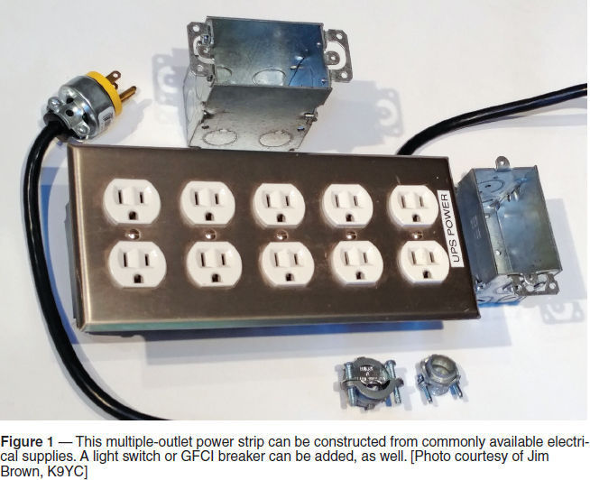
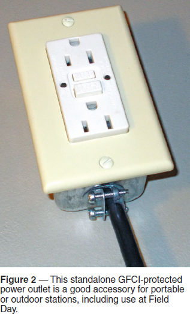

Experiment #171 — AC Power Distribution
We all start off the same way — the table or desk near a power outlet with a computer and the rig’s power supply plugged in. No problem! Then another radio and a wall wart or two make their appearance, so we daisy-chain one power strip into another, and so it goes. This leads to trouble, so let’s head it off before it starts, beginning with…
Cheap Power Strips
Inexpensive plastic power strips are sold everywhere. They might do for a lamp or radio, but they are not appropriate for use in your station. A cheap strip has cheap sockets, wiring that’s not heavy enough, and a switch that’s not rated for load interruption (see the sidebar, “MOV Surge Protectors — Avoid Them,” too). A plastic housing isn’t going to do you much good in avoiding shock hazards, either.
Poor wiring and socket quality means that your all-important safety ground connections are poor, too. The leakage current from all of those power supplies and appliances creates a small voltage as it flows through the ground conductor. That voltage can show up as a buzz in low-level audio circuits, such as voice keyers and digital mode signal connections to computers and radios. If there is a lightning strike, even just nearby, the flimsy connections can’t equalize the voltage between the enclosures, possibly allowing equipment damage.
What makes a good power strip, then? For starters, you need to be able to open up the strip and take a look. Make sure the wiring (including the power cord) is at least #14 AWG for a 15 A-rated strip. (20 A strips should have #12 AWG wiring and cords.) The connections should be short and direct. Outlets should grip the plugs securely and be firmly mounted. The strip’s enclosure should be metal and connected to the power cord’s green wire. (Make sure there is no paint between the green wire and the enclosure.) What you are looking for is often listed as “industrial” quality, and I have to warn you, these aren’t cheap! Instead of $3.99, expect to spend at least $30, and more for the longer strips.
Making Your Own Power Strip
I have a better idea. Save money and make a better one! Figure 1 shows a 10-outlet box with all the parts available from the local hardware store. Here’s how to build it, as explained to me in an e-mail from Jim Brown, K9YC:

The [outlet] boxes are [gangable] “back boxes” for switches and outlets with removable side plates and mounting ears. Some also come with interior strain-relief brackets. The boxes come in at least two depths. This box was built from the shallower boxes, shown at right. The deeper box, shown above the completed strip, provides more space for things like chokes or filters.
To build the strip, remove each box’s mounting ears, remove both side plates from interior boxes, and only one side plate from the end boxes. Use screws that held side plates to gang the boxes together [connect them side-by-side]. [Boxes are available with four or more outlet positions, as well — Ed.]
Before mounting outlets in the box, wire them together, feed the power cable into the box using one of the strain reliefs at one of the “knock-outs” and wire it to one of the duplex outlets. Tighten the strain relief, then mount the outlets, centering them as carefully as possible. It may be necessary to loosen one or more mounting screws to fit the cover plate.1
Although a regular non-metallic (Romex) cable clamp will secure a heavy flexible cord, use of a strain-relief fitting is recommended. Jim also added a label showing what type of power (UPS) it is connected to.
Along with the outlets, there’s no reason not to include a light switch in one position to turn all of the outlets on and off. Or maybe make one outlet a ground-fault circuit interrupter (GFCI) model and use it to protect the whole string. (Note that vintage radios often have high enough leakage current to the chassis that a few of them on the same circuit could cause a GFCI to trip.)
When you have this beauty completed, you won’t have to be worried about whether your power strip is up to the job. And it will cost a fraction of a top-quality commercial strip. (For more about ac wiring practices, see The ARRL Handbook’s chapter on Safety.2)
GFCI in a Box
Along with Jim’s extra-heavy-duty power strip, another good idea showed up as I was browsing the internet — a GFCI in a box. Shown in Figure 2, this is a simple thing to make. Buy a metal back box, a GFCI-protected duplex output with cover plate, and a heavy-duty power cord. Wire it up, and you have a very nice addition to your portable station, generator kit, or RV. It’s particularly useful if you’re going to be using ac outside or anywhere that might be (or get) wet.

Field Day AC Safety
I’ve been to a lot of Field Days in my 40+ years of ham radio, and when I look back on how we distributed power years ago, it’s a wonder we survived the first yank on the generator’s starting rope! Luckily, the generators available to us today at rock-bottom prices per watt are much safer than in the past. We need to do our part to make sure we use them safely, too.
If you’re going to use a generator, set it up properly and make sure its voltage is within spec at a reasonable load. (There is an overvoltage protector circuit in The ARRL Handbook’s “Power Sources” chapter.) Because the instructions for many generators leave a lot to be desired regarding grounding, download the two-page OSHA “Grounding Requirements for Portable Generators.”3 It echoes the National Electrical Code’s requirements. You may be surprised to learn that a ground rod isn’t required, but using one that is connected to the generator frame and the ground contact of power outlets is not a bad idea.
Generators are often placed a good distance from the Field Day stations. It’s common for one generator to supply more than one station, which themselves are separated for noise and RF isolation. In such cases, use a ground rod at each station and at the generator. (Hint — ground rods make a good place to anchor an extension cord in case someone trips over it.) Make sure the ground conductor of each extension cord is intact and wired correctly. Connect the metal enclosure of each piece of equipment together and then to the ground conductor of the power system. Maybe this would be a good place for the GFCI in a box? CQ Field Day!
Notes
1Based on material from k9yc.com/GroundingAndAudio.pdf.
2Available from your ARRL dealer, or from the ARRL Store, ARRL Item no. 0628. Telephone toll-free in the US 888-277-5289, or 860-594-0355, fax 860-594-0303; www.arrl.org/shop; pubsales@arrl.org.
3Grounding Requirements for Portable Generators: www.osha.gov/OshDoc/data_Hurricane_Facts/grounding_port_generator.pdf